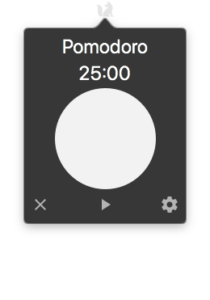
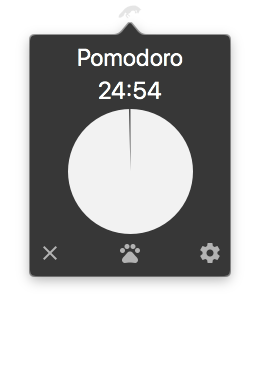
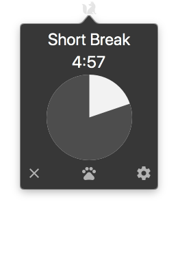
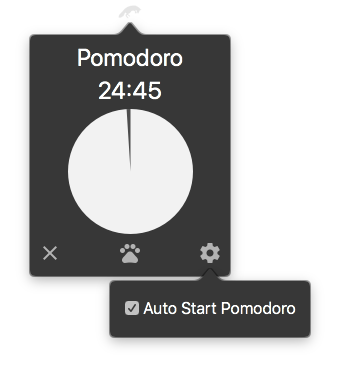

FoxTimer
FoxTimer is a simple macOS menubar application for the Pomodoro Technique.
   
Features
- Shows macOS notifications when timers are complete
- Has the option for automatically starting versus manually starting the next timer
- Icon changes depending on what status the timer is in
- Dark mode compatible